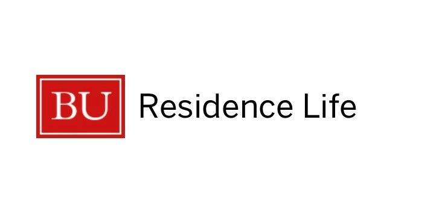
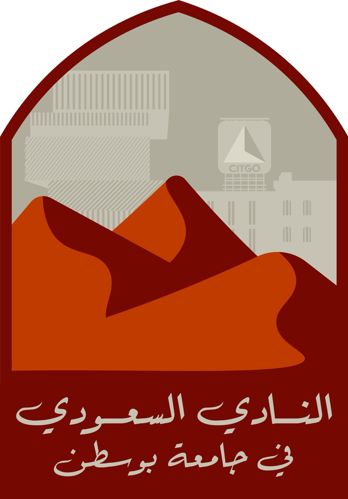

I currently work as a Resident Assistant at Boston University ResLife
August 2025 - present
Bay State Underground
September 2024 - May 2025

Graphic Designer at BU Saudi Cultural Club
January 2024 - present

I host my personal artwork and commissions on my website
lilli.garden
November 2020 - present